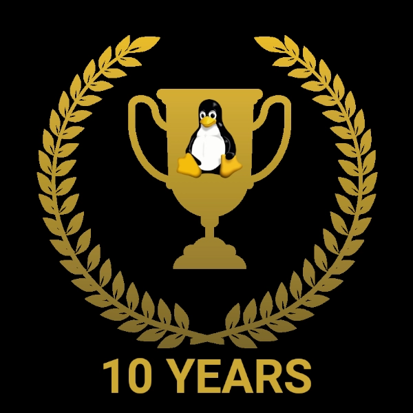
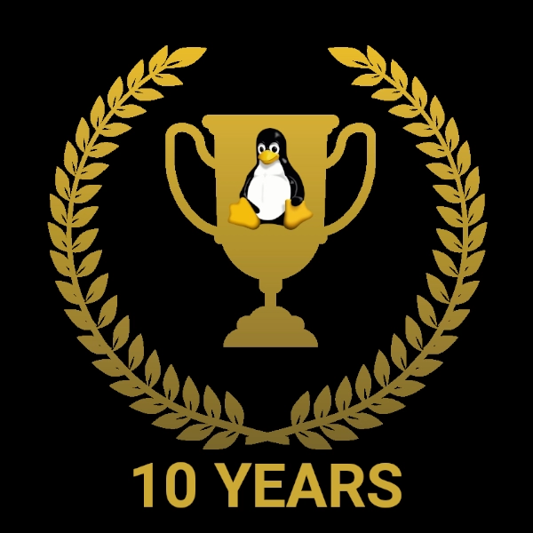

iez3quu9xaiSudei0geN
iquuthah3eephaiPh7ae
peiGhah8paif1eix9Eij
eep2ooshai0Aed9ka6ee
ich4choiMahKeijoon5t
lai7vah7BooshuChaz0O
Deeph9lo
iquuthah3eephaiPh7ae
peiGhah8paif1eix9Eij
eep2ooshai0Aed9ka6ee
ich4choiMahKeijoon5t
lai7vah7BooshuChaz0O
Deeph9lo
Chris McGimpsey-Jones / @cipheranarchist + @Cicada3301AU
White hat affiliation: Tomorrow's Hackers
Political affiliation: Anarchist
Religious affiliation: Buddhism 卍 / Buddhist Technologist Alliance
ABN: 98 317 740 240
root@chrismcgimpseyjones.tech
 chris.mcgimpseyjones@cicada3301official.com
www.ghostofmatrix.com
Linux 20+ years


- Certificate Level 1 (HPSA1NA) - NETWORK ADMINISTRATION
- Certificate Level 2 (HPSA2EN) - ENGINEER
- Certificate Level 3 (HPSA3AR) - ARCHITECT
- Certificate Level 4 (HPSA4MA) - MASTER

Freedom Publishers Union Co-Founder
Political activist and Civil libertarian
Pirate Party alumnus and Cicada 3301 (AU) custodian
(Professional) Member - International Association of Professional Writers & Editors
Political activist and Civil libertarian
Pirate Party alumnus and Cicada 3301 (AU) custodian
(Professional) Member - International Association of Professional Writers & Editors
Portfolio
I hold ownership of multiple business titles which are registered in Australia and have an established global presence.
I am the custodian of Cicada 3301 in Australia through ownership of the trademark and business titles which are registered in Australia, and the .com.au and .au domain names.
I was appointed Director of Cicada 3301 AU on January 21, 2023.
I am the administrator of Freedom Publishers Union.
I am the custodian of Cicada 3301 in Australia through ownership of the trademark and business titles which are registered in Australia, and the .com.au and .au domain names.
- "Cicada 3301" Trademark
- AU PH Cicada 3301
- Cicada 3301
- Cicada 3301 Token
- cicada3301.com.au
- cicada3301.au
I was appointed Director of Cicada 3301 AU on January 21, 2023.
I am the administrator of Freedom Publishers Union.
Other activities
I am a public advocate for Creative Commons and the Tor Project.
I advocate for open information and the free press, making regular contributions to The Conversation (AU) and have
been recognized as a "Friend of The Conversation" > www.theconversation.com/au/friends
I advocate for independent media and publishing through the Allied Advocacy Alliance.
As former President of Democratic Pirates Australia and Pirate Party alumnus, I actively engage in political lobbying
through Forward Thinking Australia.
I promote Buddhism through the Buddhist Technologist Alliance > www.buddhisttechnologistalliance.net
I founded Koala Aware to promote awareness for protection of koalas and their habitat.
I advocate for open information and the free press, making regular contributions to The Conversation (AU) and have
been recognized as a "Friend of The Conversation" > www.theconversation.com/au/friends
I advocate for independent media and publishing through the Allied Advocacy Alliance.
As former President of Democratic Pirates Australia and Pirate Party alumnus, I actively engage in political lobbying
through Forward Thinking Australia.
I promote Buddhism through the Buddhist Technologist Alliance > www.buddhisttechnologistalliance.net
I founded Koala Aware to promote awareness for protection of koalas and their habitat.
© Copyright 2023
Chris McGimpsey-Jones